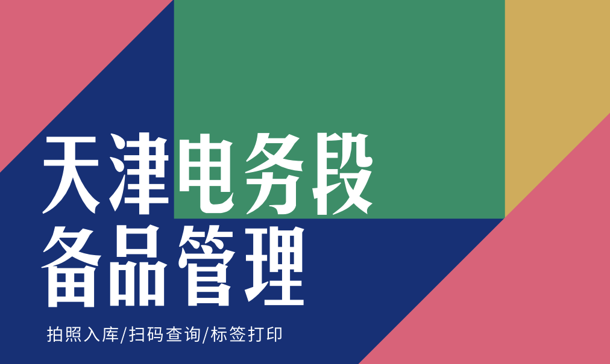

<ion-header>
  <ion-navbar>
    <ion-title>操作</ion-title>
    <!-- <ion-buttons end>
      <button ion-button icon-only color="royal" (click)="scan_tap()">
        <ion-icon name="qr-scanner"></ion-icon>
      </button>
    </ion-buttons> -->
  </ion-navbar>
</ion-header>

<ion-content padding>
  <ion-grid>
    <ion-row>
      <ion-col col-12>
        <ion-card>
          
        </ion-card>
      </ion-col>
    </ion-row>

    <ion-row>
      <ion-col>
        <ion-card (click)="cangku_tap()">
          <ion-card-header>
            当前仓库
          </ion-card-header>
          <ion-card-content>
            {{ current_cangku }}
          </ion-card-content>
        </ion-card>
      </ion-col>
    </ion-row>

    <ion-row>
      <ion-col>
        <ion-card text-center (click)="ruku_tap()">
          
          入库
        </ion-card>
      </ion-col>
      <ion-col>
        <ion-card text-center (click)="scan_tap()">
          
          扫描查询
        </ion-card>
      </ion-col>
      <ion-col>
        <ion-card text-center (click)="shouhuo_tap()">
          
          扫描收货
        </ion-card>
      </ion-col>
    </ion-row>

    <ion-row>
      <ion-col col-12>
        <ion-card style="background-color:red">
          <button ion-button small full color="danger" (click)="logout_tap()">退出登陆</button>
        </ion-card>
      </ion-col>
    </ion-row>

  </ion-grid>

</ion-content>
